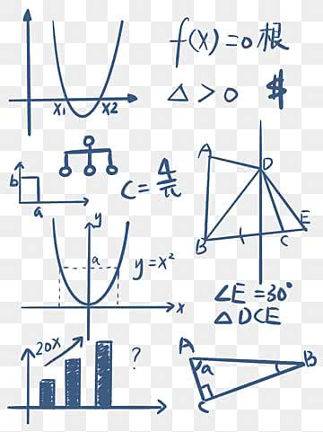

Matemáticas - Repositorio - ABravo
Inicio
Mate IV
Mate V
Mate VI áreas I y II
Mate VI área III
Mate VI área IV
Optativas
Temas auxiliares o complementarios
Productos notables
Ley de senos
Ley de cosenos
Extracción de factores fuera del radical
Operaciones con irracionales - Subtema: Racionalización del denominador
Conversión de unidades (ejemplo km/h a m/s)
Material Unidad I Funciones

Unidad I
de
Matemáticas VI área I y II